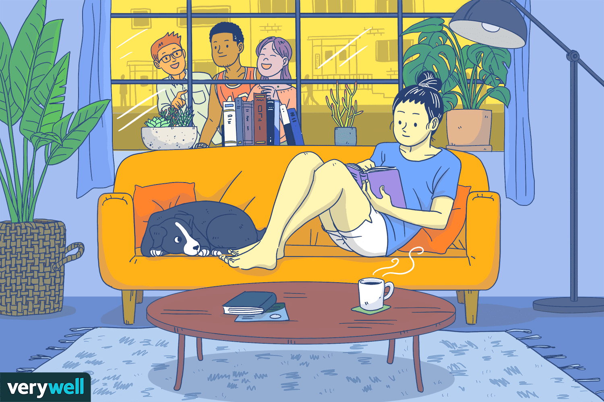
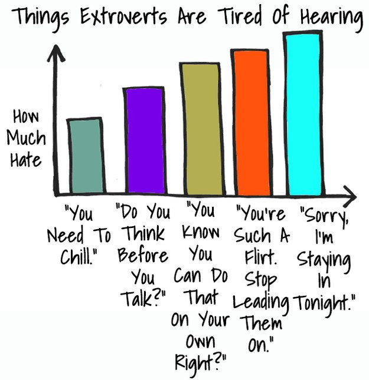
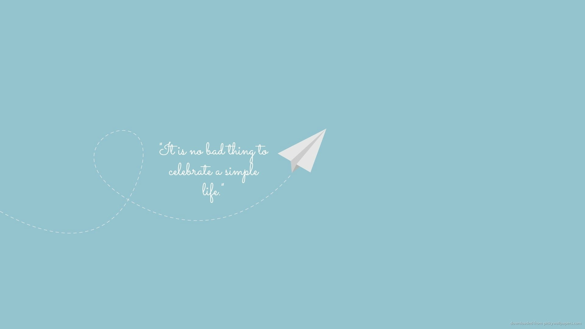
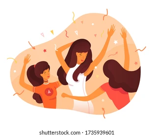

Ce sunt Introvertiții?
Introvertiții sunt persoane care își trag energia din timpul petrecut singure sau în grupuri mici și care preferă activitățile solitare față de cele sociale. Termenul "introvertit" a fost popularizat de psihologul Carl Jung, care a definit introversiunea ca o orientare către lumea interioară a gândurilor și emoțiilor proprii. Spre deosebire de extrovertiți, care se simt revitalizați de interacțiunile sociale, introvertiții tind să se simtă epuizați după perioade lungi de socializare și au nevoie de timp singuri pentru a-și reîncărca bateriile.
Caracteristici Principale ale Introvertiților:
Introvertiții se simt cel mai bine în propria lor companie sau în cercuri restrânse de prieteni apropiați. Timpul petrecut singuri le permite să reflecteze, să-și proceseze gândurile și să se relaxeze fără presiunea interacțiunii constante.
Aceștia tind să fie gânditori profunzi, analizând adesea situațiile din mai multe perspective. În general, introvertiții își iau timp să gândească înainte de a vorbi și preferă conversațiile semnificative în locul discuțiilor superficiale.
Introvertiții pot fi mai sensibili la zgomote puternice, aglomerație și alte stimuli externi. Această sensibilitate îi face să prefere medii calme și liniștite unde se pot concentra și relaxa.
Deși introvertiții nu sunt antisociali, ei preferă interacțiunile sociale mai scurte și mai rare. Adesea, își aleg cu grijă prietenii și cercul social, punând accent pe relații profunde și autentice.
Mulți introvertiți au o imaginație bogată și sunt adesea atrași de activități creative precum scrisul, arta, muzica sau programarea. Solitudinea le oferă spațiul necesar pentru a-și explora și dezvolta ideile creative.
Introvertiții sunt buni observatori și pot citi cu ușurință limbajul corporal și emoțiile celorlalți. Această abilitate îi ajută să înțeleagă mai bine dinamica socială și să-și ajusteze comportamentul în consecință.
Mituri Comune despre Introvertiți:
Deși unii introvertiți pot fi timizi, timiditatea și introversiunea nu sunt același lucru. Timiditatea se referă la frica de judecată socială, în timp ce introversiunea este o preferință pentru solitudine și reflecție interioară.
Introvertiții apreciază interacțiunile sociale, dar în doze mai mici și cu persoane cu care se simt confortabili. Ei preferă adesea discuțiile semnificative față de conversațiile banale.
Deși stilul de conducere al introvertiților poate diferi de cel al extrovertiților, aceștia pot fi lideri eficienți datorită capacității lor de a asculta, de a gândi profund și de a lua decizii bine informate.
Avantajele de a Fi Introvertit:
Introvertiții sunt adesea ascultători excelenți, ceea ce îi face prieteni și colegi de încredere. Ei acordă atenție detaliilor și își amintesc adesea informații importante despre ceilalți.
Tendința lor de a analiza profund le permite să abordeze problemele din mai multe unghiuri și să găsească soluții creative și eficiente.
Deși au mai puțini prieteni, relațiile introvertiților tind să fie mai profunde și mai autentice, bazate pe încredere și înțelegere reciprocă.
Introvertiții sunt confortabili să petreacă timp singuri, ceea ce le permite să fie independenți și să-și dezvolte propriile interese și abilități fără a depinde de alții pentru stimulare.

Ce sunt Extrovertiții?
Extrovertiții sunt persoane care își trag energia din interacțiunile sociale și din timpul petrecut în grupuri mari. Termenul "extrovertit" a fost, de asemenea, popularizat de psihologul Carl Jung, care a definit extroversiunea ca o orientare către lumea exterioară a oamenilor și activităților. Spre deosebire de introvertiți, care se simt epuizați după perioade lungi de socializare, extrovertiții se simt revitalizați și entuziasmați de contactul social frecvent și de activitățile dinamice.
Caracteristici Principale ale Extrovertiților:
Extrovertiții iubesc să fie în preajma oamenilor și se simt cel mai bine atunci când sunt înconjurați de alții. Participarea la evenimente sociale, petreceri și activități de grup este esențială pentru bunăstarea lor.
Extrovertiții au adesea un nivel de energie ridicat și sunt entuziasmați de ideea de a întâlni oameni noi și de a explora noi experiențe. Ei sunt adesea percepuți ca fiind veseli, dinamici și deschiși.
Comunicarea este un punct forte al extrovertiților. Ei se simt confortabil vorbind în public, inițiind conversații și exprimându-și ideile clar și cu încredere. Extrovertiții sunt adesea considerați sociabili și carismatici.
Extrovertiții pot fi mai impulsivi și mai dispuși să ia decizii rapide. Le place să acționeze pe moment și să exploreze oportunitățile care apar spontan, fără a se gândi prea mult la consecințe.
Extrovertiții excelează în medii de lucru colaborative și sunt adesea lideri naturali în echipe. Ei își aduc contribuția prin energie, idei noi și abilitatea de a motiva și inspira pe ceilalți.
Aceștia sunt adesea deschiși la noi experiențe și aventuri. Le place să încerce lucruri noi, să călătorească și să participe la activități care implică interacțiuni sociale și explorare.
Mituri Comune despre Extrovertiți:
Deși extrovertiții iubesc interacțiunile sociale, acest lucru nu înseamnă că sunt superficiali. Mulți extrovertiți au relații profunde și autentice și apreciază conversațiile semnificative.
Deși pot părea veseli și energici, extrovertiții au și ei momente de tristețe și introspecție. Capacitatea lor de a socializa nu înseamnă că sunt întotdeauna fericiți.
Extrovertiții pot lucra singuri atunci când este necesar, dar preferă medii în care pot colabora și interacționa cu alții. Ei pot fi foarte productivi și motivați în echipe.
Avantajele de a Fi Extrovertit:
Extrovertiții sunt excelenți în a-și construi și menține rețele sociale și profesionale. Ei își folosesc abilitățile de comunicare pentru a crea conexiuni valoroase și a-și extinde cercul de cunoștințe.
Extrovertiții se adaptează rapid la schimbări și noi situații. Ei sunt confortabili în medii dinamice și pot face față cu succes provocărilor neprevăzute.
Energia și entuziasmul extrovertiților pot fi contagioase, motivând și inspirând pe cei din jur. Ei aduc o energie pozitivă în echipe și pot stimula creativitatea și inovația.
Extrovertiții au adesea calități de lider datorită abilităților lor de comunicare, încrederea în sine și capacitatea de a motiva pe alții. Ei pot conduce cu succes echipe și proiecte, aducând împreună oamenii pentru a atinge obiective comune.
Sfaturi pentru Introvertiți

->Acordați-vă timp pentru a vă reîncărca bateriile după evenimente sociale.
->Alegeți activități care vă fac plăcere și care vă oferă o pauză de la stimularea socială.
->Nu vă simțiți vinovați pentru a spune "nu" invitațiilor atunci când aveți nevoie de timp pentru voi.
->Acceptați și prețuiți nevoia voastră de timp singuri. Acesta nu este un defect, ci o parte esențială a felului în care vă reîncărcați bateriile.
->Planificați-vă "timpul de solitudine" în programul vostru. Asigurați-vă că aveți perioade de liniște pentru a vă recupera după interacțiuni sociale intense.
->Nu vă forțați să fiți mai sociabili decât vă simțiți confortabil. E în regulă să refuzați politicos invitații sau să plecați mai devreme de la evenimente.
->Valorificați-vă punctele forte: concentrarea, atenția la detalii, capacitatea de analiză profundă și creativitatea în solitudine.
->Comunicați-vă nevoile celor apropiați. Ajutați-i să înțeleagă că nevoia voastră de solitudine nu înseamnă că nu vă pasă de ei.
->Alegeți activități sociale care se potrivesc stilului vostru. Preferați întâlnirile unu-la-unu sau grupurile mici, în locuri liniștite.
->Exersați mici pași în afara zonei de confort. Participați ocazional la evenimente mai mari, dar dați-vă voie să plecați când simțiți că v-ați epuizat.
->Folosiți scrisul sau alte forme de comunicare asincronă când simțiți că vă puteți exprima mai bine astfel.
->În mediul profesional, căutați roluri care vă permit să lucrați independent. Dar nu evitați complet colaborarea, care vă poate aduce perspective noi.
->Învățați să vă ascultați nevoile și să vă respectați stilul de viață. Nu încercați să fiți ceea ce nu sunteți; autenticitatea voastră este valoroasă.
Sfaturi pentru Extrovertiți

->Căutați oportunități de socializare și colaborare pentru a vă menține energia ridicată.
->Înțelegeți că prietenii introvertiți pot avea nevoie de pauze și respectați-le nevoia de spațiu.
->Participați la evenimente și activități care vă permit să cunoașteți oameni noi și să vă extindeți cercul social.
->Fiți conștienți că nu toți se încarcă de energie în același mod ca voi. Respectați nevoile introvertilor de a se retrage și a-și reîncărca bateriile.
->Încercați să dezvoltați abilități de ascultare activă. Uneori, entuziasmul vostru vă poate face să vorbiți mai mult decât să ascultați. Ascultarea atentă poate adânci relațiile.
->Învățați să apreciați timpul petrecut singuri. Deși vă place să fiți înconjurați de oameni, momentele de singurătate pot fi valoroase pentru reflecție și auto-dezvoltare.
->Nu confundați sociabilitatea cu productivitatea. Uneori, pentru a finaliza o sarcină, aveți nevoie de concentrare și liniște.
->Aveți grijă să nu vă suprasolicitați. Deși vă place să fiți implicați în multe activități, asigurați-vă că aveți timp și pentru odihnă.
->Exersați mindfulness și meditația. Aceste practici vă pot ajuta să vă gestionați mai bine energia și să fiți mai prezenți în interacțiunile voastre.
->În discuții, încercați să nu dominați conversația. Lăsați spațiu și pentru alții să-și exprime ideile, chiar dacă sunt mai rezervați.
->Fiți atenți la indiciile non-verbale. Nu toți sunt la fel de direcți ca voi în comunicare, așa că fiți atenți la limbajul corporal și tonul vocii celorlalți.
->Când lucrați în proiecte, asigurați-vă că și membrii mai introvertiți ai echipei au oportunitatea de a-și prezenta ideile, chiar dacă nu o fac la fel de vocal.
->Învățați să apreciați și să valorificați avantajele introversiunii, cum ar fi atenția la detalii, perseverența și capacitatea de a lucra independent. Aceste calități pot fi complementare abilităților voastre.
Resurse Suplimentare
Pentru mai multe informații, puteți vizita următoarele resurse:
Contact
Pentru întrebări sau alte informații, vă rugăm să completați formularul de mai jos: